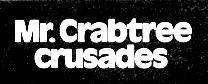
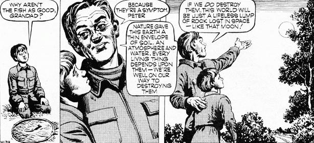
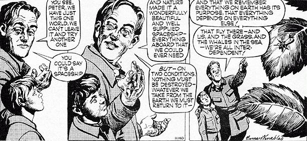

MAN-MADE ROT IS EATING AT
THE HEART OF NATURE. WE ARE
DESPOILING THE HERITAGE OF
OUR SONS, OUR GRANDSONS,
AND THEIR GRANDSONS.
And now-direct from England-the world's
most conscientious ecology cartoon feature. A
little overstated for our American tastes,
perhaps, but full of real meat, nonetheless.
Ah, if we only had a cartoon series like this on
our side of the pond! But, since we don't
MOTHER presents Mr. Crabtree Crusades!
For all the vast complexities of life on earth today, for all the cities and all the machines, the means of supporting life are what they were when man was a wandering hunter and gatherer of food in the original wilderness. Now, as then, everything must come from earth, air and water of which there is perilously little left because we are abusing and squandering them. They are the capital upon which life depends, and if we destroy them, they are not renewable. It is easy to forget in a great building of today that life, as always, depends upon the soil hidden and debased below the foundations, and that air is being destroyed by the fumes of our fine cities. Every building means a little less soil, a little less air and water.
Nature endowed this earth well for all its vast journey over the centuries. It was desperately necessary that she should, for, if supplies of life-supporting essentials gave out we couldn't leave and go elsewhere. But because the means of supply were, and are, just this thin skin of soil with its water and air, it was vital that we should live only on the earth's income, not its capital.
To make that possible everything from the most minutely invisible bacteria to the greatest things on earth must be inter-related in a huge and delicate organization. To bring damage to any part of life means affecting all other parts. Everything, whether huge or tiny, belongs to everything else. Big as the earth is, it's too small to live on without order.
|
 |
 |
 |